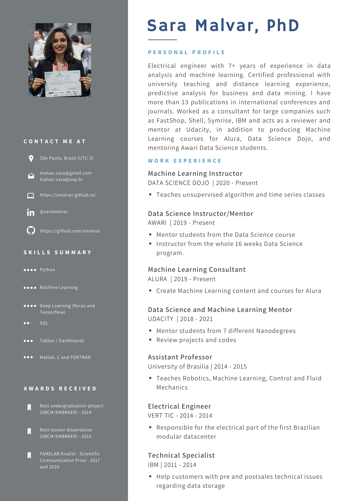
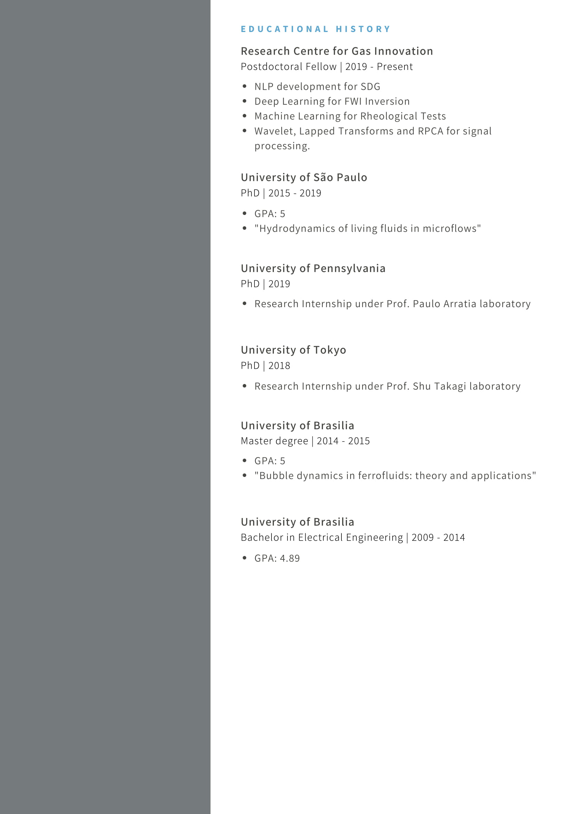
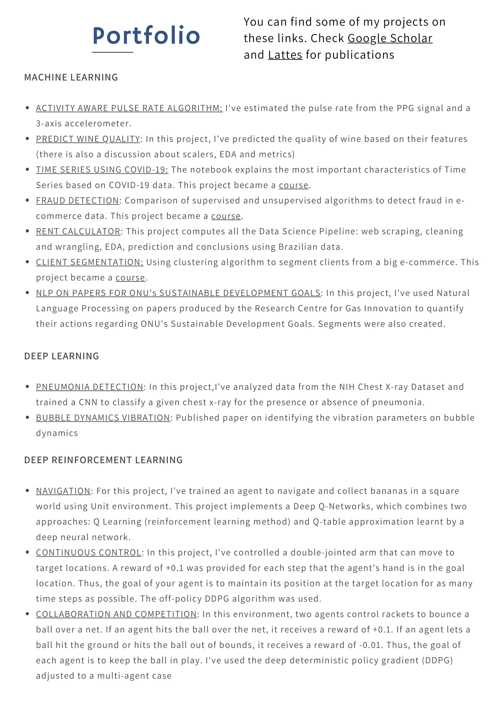

{% include quote.html quote=page.quote author=page.author %}

<div class="container about_section">
  <div class="row">
    <div class="about_paragraph">
      <p>
        Check my corporate resume below. My academic curriculum can be found at <a class="about_me_links" href="http://lattes.cnpq.br/3123821059835327">Lattes</a>.
      </p>
      
  </div>


<div class="row resume-wrapper">
  <a href="./assets/resume.pdf" title="click to open in pdf viewer" target="_blank">
    
    
    
    <button class="fill col s8 offset-s2 m4 offset-m4">open as pdf</button>
  </a>
</div>
